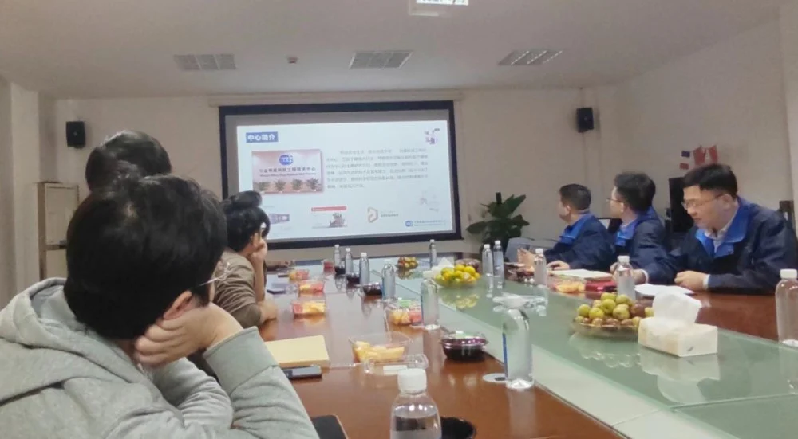
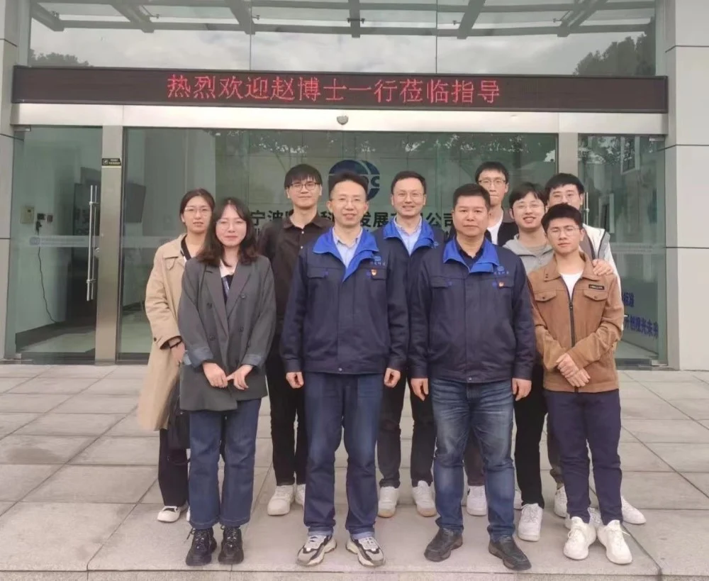

为了进一步贴近科技孵化、学习合作企业的先进经验，10.12日，iMED宁波成员在赵一天研究员的带领下前往宁波明星科技发展有限公司进行了参观学习。宁波明星科技发展有限公司，前身为宁波市二轻工业研究设计院，2006 年改制为宁波明星科技发展有限公司，是中国眼镜协会常务理事、设备仪器专业委员会主任单位。自1997 年以来，公司依托原二轻工业设计院的技术优势,专业从事眼镜验配设备的自主研发、生产和销售。经过二十几年的快速发展，现已成为中国优秀的眼视光设备研发机构。
上午在总经理黄涨国、副总经理马孟鸿等工作人员的带领下对公司旗下的研发室、设备室进行了参观。马工为我们介绍了公司所开发的各型验光设备、全自动磨边机以及最新推出的眼底彩照设备等。iMED宁波成员们通过马工的讲解，了解到了技术的研发到最总产品的落地的整个过程。随后，赵一天研究员与黄总、马工等明星科技团队负责人进行了亲切的交流，探讨了下一步关于相干断层扫描设备与眼底彩照设备的合作。此外，黄总就目前公司希望能够通过人工智能解决的问题，提出了新的需求，这将给团队带来许多新的想法与机遇，进一步加强了双方在科研和项目上的合作。最后由明星科技工作人员为iMED同学们体验了公司内的明星产品-天乐全自动综合验光仪。该仪器经过17年的研发积累和迭代升级，全新的人机交互模式，最大程度的解放操作人员的双手，轻松实现自动加载视标和辅助配镜，实现快速、轻松的双眼视功能检查。每一测量阶段结束，点击相应的按键，系统就会自动的计算并记录检测结果，生成视功能检测分析报告。整个过程都体现了去繁琐、智能化、自动化的重要性，也更加肯定了我组以人工智能为技术手段开展眼类疾病自动检测的社会意义，为患者、为工作人员、为国家医疗建设贡献绵薄之力。

通过本次交流学习，iMED成员受益良多，今后努力将我团队的专业理论知识与贵公司实践能力进行融合，充分发挥双方优势，做到真正的产学研一体化。更希望通过双方的深度合作，进一步深耕眼科疾病自动检测技术的研发与创新，为祖国、为社会、为人民创造更大的价值。
